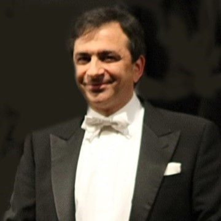

Claudio Maria Micheli.
Da oltre trent'anni sul podio dei cori romani, collaboratore di Ennio Morricone, arrangiatore e insegnante di canto.

Alla guida del Coro Ruggero Giovannelli e, dal 2019, di Harmonia Vocalis.
Il M° Claudio Maria Micheli guida il Coro Harmonia Vocalis fin dalla sua nascita, nel 2019, ed è l'artefice della sua crescita.
Da oltre trent'anni dirige il Coro Ruggero Giovannelli, che insieme a Harmonia Vocalis forma oggi un unico gruppo corale di circa settanta voci, con un repertorio condiviso da proporre in concerto.
Alla testa dell'ensemble, sostenuto dalle orchestre sinfoniche che coinvolge negli eventi, affronta la quasi totalità del repertorio sacro e profano, dal Barocco al Novecento, fino alla musica di Ennio Morricone, di cui è stato collaboratore nei primi anni Duemila.
Maestro di coro e insegnante di canto, pretende dai suoi coristi impegno, dedizione e partecipazione alle prove: la qualità del canto e il colore del suono sono per lui elementi irrinunciabili di esecuzioni che devono essere sempre interessanti, mai banali.
Arrangiamenti e revisioni
Formazione, direzioni e collaborazioni: il testo completo, con nuove foto, sarà pubblicato qui appena fornito dal Maestro.